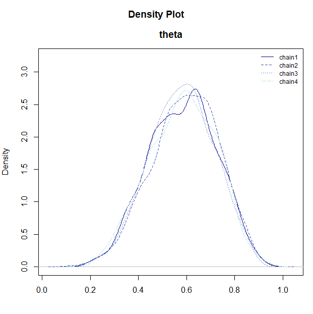
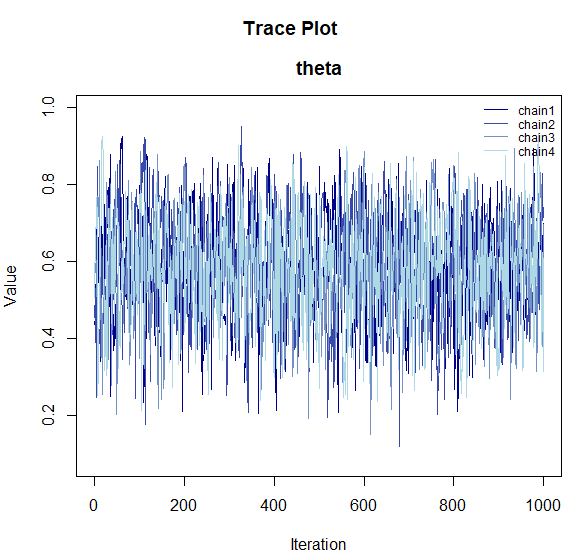
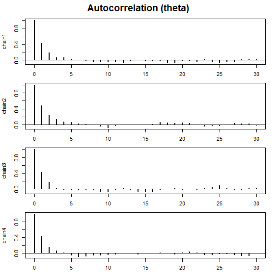
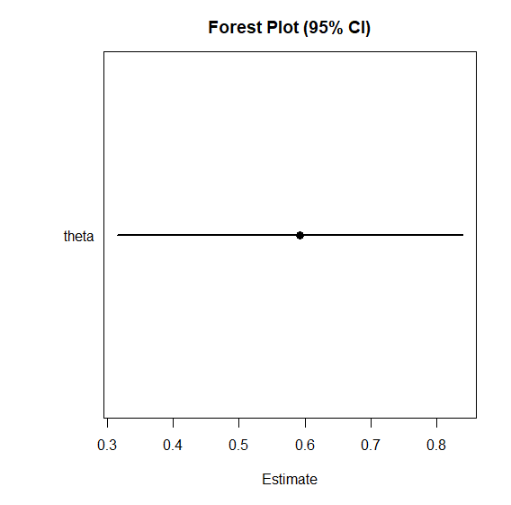
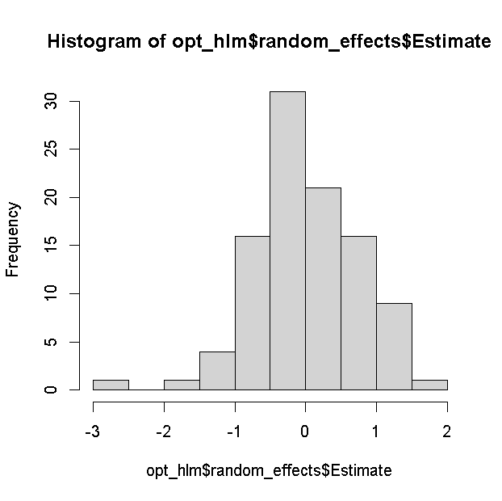
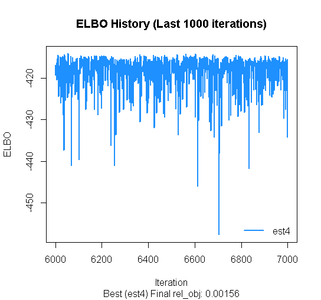

このページでは、BayesRTMB を実際に使い始めるための最短ルートを順を追って説明します。
最初に単純な二項モデルで rtmb_code() と
rtmb_model() の基本的な流れを確認し、
次に回帰モデルで各ブロックの役割を見て、最後に階層モデルで random effect
と Laplace 近似の使い方を確認します。
このページで扱う流れ
BayesRTMB の基本的な使い方は、次のような4段階です。
- データを用意する
rtmb_code()でモデルを書くrtmb_model()でモデルオブジェクトを作るoptimize()・sample()・variational()を使って推定をする
二項分布モデル
最初に、もっとも単純な二項モデルを例に、rtmb_code() と
rtmb_model() の基本的な流れを確認します。 ここでは、10
回の試行のうち成功が 6 回観測された状況を扱います。
library(BayesRTMB)
Trial <- 10
Y <- 6
data_list <- list(Trial = Trial, Y = Y)
model_code <- rtmb_code(
parameters = {
theta <- Dim(lower = 0, upper = 1)
},
model = {
Y ~ binomial(Trial, theta)
theta ~ beta(1, 1)
}
)モデルオブジェクト作成
rtmb_model()
は、データとモデル定義を受け取って推定用のモデルオブジェクトを作る関数です。
最低限必要なのは、観測データをまとめた data
と、rtmb_code() で作成した code です。
この段階ではまだ推定は行われません。
ここで作られたモデルオブジェクトに対して、以後
optimize()、sample()、variational()
を実行していきます。
mdl <- rtmb_model(data = data_list, code = model_code)## Pre-checking model code...
## Checking RTMB setup...MAP推定（事後密度最大推定）
optimize() は MAP 推定を行います。
事後分布の最頻値に対応する点推定を求めたいときに使います。
まずは追加オプションなしで実行し、推定値と区間推定の出力を確認します。
fit_MAP <- mdl$optimize()
fit_MAP## Call:
## MAP Estimation via RTMB
##
## Negative Log-Posterior: 1.38
## Approx. Log Marginal Likelihood (Laplace): -0.90
##
## Point Estimates and 95% Wald CI:
## variable Estimate Std. Error Lower 95% Upper 95%
## theta 0.59976 0.15495 0.29720 0.84152 se_samplingオプション
se_sampling = TRUE
を指定すると、推定結果の不確実性を使って、シミュレーションベースで標準誤差と
95% 区間を計算します。
この方法を使うと、最小値や最大値があるパラメータも正確な95%信頼区間の計算が可能です。
生成量の信頼区間まで含めて見たいときに便利です。
fit_MAP <- mdl$optimize(se_sampling = TRUE)
fit_MAP## Call:
## MAP Estimation via RTMB
##
## Negative Log-Posterior: 1.38
## Approx. Log Marginal Likelihood (Laplace): -0.90
##
## Point Estimates and 95% Wald CI:
## variable Estimate Std. Error Lower 95% Upper 95%
## theta 0.59976 0.14563 0.29416 0.83985 MCMCで推定
sample() は NUTS を用いた MCMC サンプリングを行います。
既定値は sampling = 1000, warmup = 1000,
chains = 4, thin = 1 です。
fit_mcmc <- mdl$sample(
sampling = 1000,
warmup = 1000,
chains = 4,
thin = 1
)
fit_mcmc## variable mean sd map q2.5 q97.5 ess_bulk ess_tail rhat
## lp -3.33 0.74 -2.86 -5.43 -2.80 1712 1744 1.00
## theta 0.59 0.14 0.62 0.32 0.84 1609 1577 1.00 MCMC結果の保存と読み込み (save_csv)
計算に時間がかかるモデルや大規模なサンプリングを行う場合、結果を CSV
ファイルとして保存しておくと便利です。 sample()（または
variational()）の実行時に save_csv
引数を指定すると、指定したディレクトリにチェインごとのサンプリング結果が書き出されます。
# 結果を "mcmc_out" ディレクトリに "my_model_chain_X.csv" という名前で保存
fit_mcmc <- mdl$sample(
save_csv = list(name = "my_model", dir = "mcmc_out")
)保存された結果は、後で read_mcmc_csv()
関数を使ってモデルオブジェクトに読み戻すことができます。これにより、セッションを閉じたり
R
を再起動した後でも、サンプリング結果を再利用してプロットや要約を行うことが可能です。
# 保存されたファイルを読み込む
# (mdl は同じ設定で作られたモデルオブジェクトである必要があります)
fit_mcmc <- read_mcmc_csv(mdl, name = "my_model", dir = "mcmc_out")推論結果の可視化
MCMC で得られた事後分布の形状や収束状況を確認するために、BayesRTMB にはいくつかの可視化関数が用意されています。
これらの関数は、モデルオブジェクトの $draws()
メソッドで抽出したサンプルを渡すことで利用できます。
# 事後サンプルを抽出
samples <- fit_mcmc$draws("theta")
# 事後密度のプロット
plot_dens(samples)
# トレースプロット（収束の確認）
plot_trace(samples)
# 自己相関プロット
plot_acf(samples)
# フォレストプロット（点推定値と区間の一覧）
plot_forest(samples)



-
plot_dens(): パラメータごとの事後分布の密度を表示します。 -
plot_trace(): 各チェインがパラメータ空間をどのように移動したかを表示します。複数のチェインが重なり合っている状態になっていれば収束が期待できます。 -
plot_acf(): MCMCサンプルの自己相関をプロットします。 -
plot_forest(): パラメータの点推定値（中央値）と 95% 確信区間を横並びで表示します。
bridgesamplingメソッドで対数周辺尤度の計算
bridgesampling() を使うと、MCMC
サンプルにもとづいて対数周辺尤度を推定できます。
出力には推定誤差も付くため、誤差が大きい場合はサンプル数を増やして精度を上げます。
一度計算した結果は fit_mcmc$log_ml
に保存されるため、同じオブジェクトで後から再利用できます。
fit_mcmc$bridgesampling()
fit_mcmc$log_ml## [1] -2.401682
## attr(,"error")
## [1] 0.001049984
## attr(,"ess")
## [1] 1204.976回帰分析モデル
次に、回帰分析を例に rtmb_code()
の各ブロックの役割を解説します。 この例では、
-
setupでデータの次元を整理し、 -
parametersで推定するパラメータを宣言し、 -
transformで平均構造muを定義し、 -
modelで尤度と事前分布を書く
という流れになっています。
なお、回帰分析や一般化線形（混合）モデルなどの標準的な分析であれば、rtmb_lm
や rtmb_glmer
といったラッパー関数を使うことで、自分でコードを書かなくてもモデルを自動生成して推定できます。詳しくは
ラッパー関数の使い方
を参照してください。
ここでは、切片と回帰係数に正規分布、残差標準偏差に指数分布を事前分布として与えるモデルを構築します。
データはこのパッケージに入っているdataである討論データを使います。 討論の満足度を目的変数、討論中の発言量、討論パフォーマンス、会話スキル、条件（討論目的）についてのデータです。ここでは発言量、パフォーマンス、会話スキルのデータを使います。
data(discussion)
Y <- discussion$satisfaction
X_names <- c("talk", "performance", "skill")
X <- subset(discussion, select = X_names)
data_reg <- list(Y = Y, X = X)
code_reg <- rtmb_code(
setup = {
N <- length(Y)
P <- ncol(X)
},
parameters = {
alpha <- Dim()
beta <- Dim(P)
sigma <- Dim(lower = 0)
},
transform = {
mu <- alpha + beta[1] * X[, 1] + beta[2] * X[, 2] + beta[3] * X[, 3]
},
model = {
Y ~ normal(mu, sigma)
alpha ~ normal(0, 100)
beta ~ normal(0, 10)
sigma ~ exponential(1 / 10)
}
)モデルに初期値を入れる
rtmb_model() では init
を指定して初期値を与えることができます。
初期値を明示しておくと、複雑なモデルで推定が安定しやすくなることがあります。
一部のパラメータだけ指定した場合は、残りを自動で補うこともできます。
mdl_reg <- rtmb_model(
data = data_reg,
code = code_reg,
init = list(alpha = 0, beta = c(0, 0, 0))
)MCMCで推定
回帰モデルでも sample()
を使えば事後分布を正確に推定できます。
mcmc_reg <- mdl_reg$sample()
mcmc_reg## variable mean sd map q2.5 q97.5 ess_bulk ess_tail rhat
## lp -411.42 1.70 -410.51 -415.77 -409.27 1099 1125 1.00
## alpha 1.51 0.24 1.52 1.03 1.98 805 842 1.01
## beta[1] 0.27 0.05 0.26 0.17 0.37 765 1223 1.00
## beta[2] 0.15 0.03 0.15 0.09 0.21 958 1107 1.01
## beta[3] 0.19 0.07 0.18 0.06 0.33 1004 1156 1.00
## sigma 0.90 0.04 0.90 0.83 0.98 984 1196 1.00
## mu[1] 2.96 0.10 2.96 2.76 3.16 1070 1095 1.00
## mu[2] 3.08 0.11 3.07 2.86 3.30 1254 2031 1.00
## mu[3] 2.96 0.10 2.96 2.76 3.16 1070 1095 1.00
## mu[4] 3.35 0.10 3.34 3.16 3.54 1489 2198 1.00 bayes_factor
bayes_factor()
を使うと、推定したモデルと帰無モデルの周辺尤度を比較し、ベイズファクターを計算できます。
null_model = "beta[1]" のように指定すると、その係数を 0
に固定した帰無モデルを内部で作成して比較します。
係数の予測に対する寄与をベイズ的に評価したいときに便利です。
bf_result <- mcmc_reg$bayes_factor(null_model = "beta[1]")
bf_result## Bayes Factor (BF12) : 1047.097
## Log Bayes Factor : 6.9538 (Approx. Error = 0.0051)
## Interpretation : Decisive evidence for Model 1 階層線形モデル
あるパラメータの集団差をさらにモデリングしたいとき階層線形モデルが役立ちます。データの確率モデルに含まれるパラメータが、さらに確率モデルを持つとき、階層モデルと呼びます。
階層モデルの分析例として今回も discussion
データを用います。
ここでは集団ごとの切片のランダム効果を導入し、集団差を表現します。
data(discussion)
Y <- discussion$satisfaction
X_names <- c("talk", "performance", "skill")
X <- subset(discussion, select = X_names)
group <- discussion$group
data_hlm <- list(Y = Y, X = X, group = group)
code_hlm <- rtmb_code(
setup = {
N <- length(Y)
G <- length(unique(group))
P <- ncol(X)
},
parameters = {
alpha <- Dim()
beta <- Dim(P)
tau <- Dim(lower = 0)
sigma <- Dim(lower = 0)
r <- Dim(G, random = TRUE)
},
transform = {
mu <- alpha + X %*% beta + r[group] * tau
},
model = {
Y ~ normal(mu, sigma)
r ~ normal(0, 1)
alpha ~ normal(0, 100)
beta ~ normal(0, 10)
tau ~ exponential(1 / 10)
sigma ~ exponential(1 / 10)
}
)モデルの設定
par_names や view
をモデル作成時に指定しておくと、要約結果の表示がわかりやすくなります。par_names
はパラメータの表示名を付けるために使い、view は
summary()
などで優先的に上に表示したい変数を指定するために使います。
この例では par_names
を使って回帰係数に変数名を付け、view を使って
summary()
でtauをsigmaより優先表示するように指定しています。
出力の可読性を高めたい場合は、この 2
つをあらかじめ設定しておくと便利です。
mdl_hlm <-
rtmb_model(
data = data_hlm,
code = code_hlm,
par_names = list(beta = X_names),
view = c("alpha", "beta", "tau", "sigma")
)ラプラス近似によるMAP推定
optimize(laplace = TRUE)
(デフォルトはTRUE)とすると、ランダム効果を Laplace
近似で積分消去しながら固定効果を推定できます。
階層モデルでは計算をかなり軽くできることが多く、まず MAP
で全体像を確認したいときに有用です。
opt_hlm <- mdl_hlm$optimize(laplace = TRUE)
opt_hlm## Call:
## MAP Estimation via RTMB
##
## Negative Log-Posterior: 399.48
## Approx. Log Marginal Likelihood (Laplace): -411.83
## Note: Random effects are stored in $random_effects
##
## Point Estimates and 95% Wald CI:
## variable Estimate Std. Error Lower 95% Upper 95%
## alpha 1.52450 0.25732 1.02015 2.02884
## beta[talk] 0.23487 0.05323 0.13054 0.33920
## beta[performance] 0.15451 0.03713 0.08175 0.22728
## beta[skill] 0.22613 0.05990 0.10874 0.34352
## tau 0.48512 0.06507 0.37298 0.63098
## sigma 0.74762 0.03752 0.67759 0.82488
## mu[1,1] 2.92366 0.34519 2.24711 3.60022
## mu[2,1] 3.14105 0.34856 2.45788 3.82422
## mu[3,1] 2.92366 0.34519 2.24711 3.60022
## mu[4,1] 3.09284 0.34706 2.41263 3.77306 事前分布の違いはありますが、laplace近似の推定は最尤推定のlme4とほぼ同じ結果が出ます。（※注：lme4
は BayesRTMB
の実行には不要ですが、以下のコードは比較のための参考として利用してください。もしご自身の環境で実行する場合は
lme4 を別途インストールしておく必要があります）
library(lme4)
result <-
lmer(satisfaction ~ talk + performance + skill + (1 | group),
data = discussion, REML = FALSE
)
result |> summary()## Linear mixed model fit by maximum likelihood ['lmerMod']
## Formula: satisfaction ~ talk + performance + skill + (1 | group)
## Data: discussion
##
## AIC BIC logLik -2*log(L) df.resid
## 771.1 793.4 -379.6 759.1 294
##
## Scaled residuals:
## Min 1Q Median 3Q Max
## -3.15138 -0.51022 0.03797 0.54144 2.87725
##
## Random effects:
## Groups Name Variance Std.Dev.
## group (Intercept) 0.2357 0.4855
## Residual 0.5601 0.7484
## Number of obs: 300, groups: group, 100
##
## Fixed effects:
## Estimate Std. Error t value
## (Intercept) 1.52449 0.25735 5.924
## talk 0.23485 0.05286 4.443
## performance 0.15451 0.03714 4.160
## skill 0.22616 0.05960 3.795
##
## Correlation of Fixed Effects:
## (Intr) talk prfrmn
## talk -0.516
## performance -0.632 -0.056
## skill -0.387 -0.138 -0.020ランダム効果の推定結果は random_effects
に別途保存されます。
opt_hlm$random_effects$Estimate |> hist()
MCMC
階層モデルでも sample()
によってMCMC推定で安定して推定可能です。
チェイン数が多い場合やモデルが重い場合は、parallel = TRUE
を指定して並列計算することもできます。1回目は並列化のためのワーカー立ち上げに時間がかかりますが、2回目以降は高速に立ち上がります。
収束診断を確認しながら、必要なら warmup や
sampling を増やしていきます。
mcmc_hlm <- mdl_hlm$sample(parallel = TRUE)
mcmc_hlm$summary()## variable mean sd map q2.5 q97.5 ess_bulk ess_tail rhat
## lp -503.48 11.43 -502.73 -527.43 -482.45 845 1883 1.00
## alpha 1.53 0.26 1.50 1.02 2.04 1885 2572 1.00
## beta[talk] 0.24 0.06 0.23 0.13 0.34 3292 3346 1.00
## beta[performance] 0.15 0.04 0.16 0.08 0.23 1724 2415 1.00
## beta[skill] 0.23 0.06 0.21 0.10 0.34 4128 3016 1.00
## tau 0.50 0.07 0.50 0.36 0.63 1532 1885 1.00
## sigma 0.76 0.04 0.76 0.69 0.84 2123 3211 1.00
## r[1] 0.02 0.66 0.00 -1.28 1.27 6016 2961 1.00
## r[2] -0.56 0.66 -0.47 -1.86 0.73 5403 2966 1.00
## r[3] -0.75 0.68 -0.77 -2.07 0.58 5041 3202 1.00 MCMCでもlaplace近似を実行できます。推定結果は変わりませんが、MCMCの自己相関は下がりやすいので、収束は安定します。ただ、推定時間は長くなるので、一長一短です。MCMCで十分収束するなら、laplace近似を特別使う必要はないかも知れません。 ただ、WAICなどの予測指標を使うとき、階層化するときとしないときの比較が難しいので、laplace近似が自動でできると便利なときもあります。
mcmc_hlm_l <- mdl_hlm$sample(laplace = TRUE, parallel = TRUE)ADVI
複雑な階層モデルでは、MAPがうまく解を出せず、またMCMCではとても時間がかかることがあります。そういうときに、近似的に解を得たいときには変分ベイズ法が便利です。
変分ベイズ法も並列化が可能です。
ただし、複雑なモデルになると収束判断が難しいので、plot_elbo()メソッドで収束しているか確認するのが重要です。変分ベイズ法は初期値依存があるので、大雑把にでも初期値を与えておくと収束が安定します。
また、ADVIでもlaplace近似が使えます。ただし、laplace近似を実行すると計算が遅くなります。
meanfieldは平均場近似といって、事後分布がすべて独立であるという仮定で推定します。信頼区間がやや狭めに推定されますが、点推定値を得るのには十分使えます。
vb_hlm <- mdl_hlm$variational(
iter = 7000,
parallel = TRUE,
method = "meanfield",
laplace = TRUE
)
vb_hlm$summary(digits = 5)## variable mean sd map q2.5 q97.5
## lp -403.59863 2.68487 -401.72373 -410.58114 -400.88726
## alpha 1.52112 0.06460 1.52966 1.39289 1.65062
## beta[talk] 0.23008 0.02011 0.22903 0.18939 0.26960
## beta[performance] 0.15445 0.01236 0.15815 0.12902 0.17917
## beta[skill] 0.22121 0.02962 0.23026 0.16046 0.27926
## tau 0.52022 0.06577 0.50972 0.40743 0.65876
## sigma 0.76221 0.03666 0.75816 0.69228 0.83982
## mu[1,1] 2.91530 0.04257 2.91892 2.83138 3.00157
## mu[2,1] 3.12764 0.06905 3.15095 2.99470 3.26365
## mu[3,1] 2.91530 0.04257 2.91892 2.83138 3.00157 さらにmethodをfullrankにしておけば、事後分布が独立ではない多変量正規分布を仮定して推定ができます。理論的には、laplace=TRUE,
method = "fullrank"
と指定しておけば、MAPと同様の結果がでるはずです。
vb_hlm <- mdl_hlm$variational(
iter = 7000,
parallel = TRUE,
method = "fullrank",
laplace = TRUE
)
vb_hlm$summary(digits = 5)## variable mean sd map q2.5 q97.5
## lp -403.97866 2.20926 -402.90991 -409.23611 -401.18538
## alpha 1.53770 0.25051 1.56744 1.01054 2.02055
## beta[talk] 0.24155 0.05547 0.23247 0.13522 0.35168
## beta[performance] 0.15541 0.03070 0.14594 0.09867 0.21363
## beta[skill] 0.22281 0.06458 0.24644 0.09070 0.34811
## tau 0.51825 0.07037 0.52741 0.39687 0.66168
## sigma 0.75946 0.05066 0.76286 0.66550 0.85404
## mu[1,1] 2.94047 0.07042 2.92289 2.80572 3.08573
## mu[2,1] 3.14453 0.09346 3.14312 2.96019 3.32846
## mu[3,1] 2.94047 0.07042 2.92289 2.80572 3.08573 収束が悪い推定結果がある場合、bestなものだけを見ることができます。 これで過去1000回分のELBOの推定が真横にランダムに並んでいれば大丈夫です。 右上がりになっている場合はまだ収束していない可能性があります。
vb_hlm$plot_elbo(ests = "best")
vb_hlm$summary()
モデル比較
対数周辺尤度を計算することで、モデル比較ができます。
先ほどの回帰分析の結果と階層線形モデルの比較をしてみましょう。 変量効果を推定することによってどれほどモデルは改善したのでしょう。
上で解説したようにMAP推定でも対数周辺尤度を計算できるので、近似的にモデル比較ができます。
opt_reg <- mdl_reg$optimize()
opt_reg$log_ml
opt_hlm$log_ml## > opt_reg$log_ml
## [1] -419.6358
## > opt_hlm$log_ml
## [1] -411.8348ただし、MAP推定の対数周辺尤度はあくまで近似値なので、より正確にするにはMCMC推定の結果をbridgesamplingで計算する方がいいです。特に、MAPは変量効果があるときにラプラス近似を使うので、対数周辺尤度はラプラス近似を使わないMCMCと少し値が変わります。
mcmc_reg$bridgesampling()
mcmc_hlm$bridgesampling()## > mcmc_reg$bridgesampling()
## Bridge Sampling Converged: LogML = -419.608 (Error = 0.0039, ESS = 830.6)
## [1] -419.6081
## attr(,"error")
## [1] 0.003854939
## attr(,"ess")
## [1] 830.623
## > mcmc_hlm$bridgesampling()
## Bridge Sampling Converged: LogML = -412.675 (Error = 0.0401, ESS = 760.2)
## [1] -412.6746
## attr(,"error")
## [1] 0.04009978
## attr(,"ess")
## [1] 760.1723ラプラス近似を使ったMCMCは、MAPの結果に近いです。
mcmc_hlm_l$bridgesampling()## > mcmc_hlm_l$bridgesampling()
## Bridge Sampling Converged: LogML = -411.770 (Error = 0.0053, ESS = 994.9)
## [1] -411.7704
## attr(,"error")
## [1] 0.005318097
## attr(,"ess")
## [1] 994.8858GLMM
一般化線形混合モデル(GLMM)も可能です。
討論満足度は5件法で測定されているため、順序データとして扱えます。 そこで、順序ロジスティック分布を仮定した、マルチレベル分析を実行してみます。
data(discussion)
Y <- discussion$satisfaction
X_names <- c("talk", "performance", "skill")
X <- subset(discussion, select = X_names)
group <- discussion$group
data_glmm <- list(Y = Y, X = X, group = group)
code_glmm <- rtmb_code(
setup = {
N <- length(Y)
G <- length(unique(group))
P <- ncol(X)
K <- length(unique(Y))
},
parameters = {
alpha <- Dim(K - 1, type = "ordered") # 順序制約のあるベクトル
beta <- Dim(P)
tau <- Dim(lower = 0)
r <- Dim(G, random = TRUE)
},
transform = {
mu <- X %*% beta + r[group] * tau
},
model = {
Y ~ ordered_logistic(mu, alpha) # 順序ロジスティック分布も実装されている
r ~ normal(0, 1)
alpha ~ normal(0, 2.5)
beta ~ normal(0, 10)
tau ~ exponential(1 / 10)
}
)モデルの読み込み
mdl_glmm <- rtmb_model(data_glmm, code_glmm,
par_names = list(beta = X_names)
)ラプラス近似によるGLMM
変量効果を積分消去した推定で、glmmもMAP推定が可能です。
opt_glmm <- mdl_glmm$optimize()
opt_glmm## Call:
## MAP Estimation via RTMB
##
## Negative Log-Posterior: 391.24
## Approx. Log Marginal Likelihood (Laplace): -397.74
## Note: Random effects are stored in $random_effects
##
## Point Estimates and 95% Wald CI:
## variable Estimate Std. Error Lower 95% Upper 95%
## alpha[1] -0.30770 0.65457 -1.59063 0.97522
## alpha[2] 1.48733 0.60548 -0.32034 3.51175
## alpha[3] 4.25193 0.63446 1.98068 6.83335
## alpha[4] 6.50517 0.70195 3.81621 9.59934
## beta[talk] 0.50442 0.13449 0.24082 0.76802
## beta[performance] 0.32810 0.09502 0.14186 0.51434
## beta[skill] 0.49771 0.15633 0.19131 0.80411
## tau 1.27056 0.21778 0.90803 1.77784
## mu[1,1] 2.81917 0.93273 0.99105 4.64730
## mu[2,1] 3.31017 0.97502 1.39917 5.22117 混合分布モデル
複数の分布が混ざったデータを推定することもできます。 まずはデータ生成を行います。
set.seed(123)
N <- 300 # サンプルサイズ
K <- 3 # クラスタの数
# 真のパラメータ
theta_true <- c(0.2, 0.5, 0.3) # 各クラスタの混合比率 (和が1)
mu_true <- c(-3, 0, 4) # 各クラスタの平均
sigma_true <- c(0.5, 1.0, 0.8) # 各クラスタの標準偏差
# 潜在変数 z (各データ点がどのクラスタから生成されたか)
z <- sample(1:K, size = N, replace = TRUE, prob = theta_true)
# 観測データ Y
Y <- numeric(N)
for (i in 1:N) {
Y[i] <- rnorm(1, mean = mu_true[z[i]], sd = sigma_true[z[i]])
}
Y |> hist()
data_mix <- list(Y = Y)以下がコードになります。
code_mix <- rtmb_code(
setup = {
K <- 3 # クラスタ数
},
parameters = {
theta <- Dim(K, type = "simplex") # 総和が1になる正のベクトル 混合率でよく使う
mu <- Dim(K)
sigma <- Dim(K, lower = 0)
},
model = {
mu ~ normal(0, 5)
sigma ~ exponential(1)
theta ~ dirichlet(rep(1, K)) # ディリクレ分布を事前分布にする
Y ~ normal_mixture(theta, mu, sigma) # 混合正規分布が用意されている
}
)モデルの用意
mdl_mix <- rtmb_model(data_mix, code_mix)初期値の設定
混合分布モデルは、そのまま推定するとラベルスイッチングがよく生じます。 ラベルスイッチングとは、チェインごとでクラスタのラベルづけが変わってしまう現象です。 MCMCでは避けては通れないですが、初期値を与えると起きにくくなります。
そこで、MAP推定値を使います。ただ、混合分布モデルは初期値依存で局所最適解に陥ることがよくあるので、複数のMAPを走らせます。num_estimate = 8とすることで8回走らせることができます。
opt_mix <- mdl_mix$optimize(num_estimate = 8)## Starting optimization...
## Optimization run 8/8...
##
## Optimization Diagnostics per estimate:
## est1: Objective = 711.49, Code = 0 (Converged)
## est2: Objective = 711.49, Code = 0 (Converged)
## est3: Objective = 655.84, Code = 0 (Converged) <-- BEST
## est4: Objective = 695.90, Code = 0 (Converged)
## est5: Objective = 655.84, Code = 0 (Converged)
## est6: Objective = 675.00, Code = 0 (Converged)
## est7: Objective = 713.57, Code = 0 (Converged)
## est8: Objective = 676.45, Code = 0 (Converged)このBestの結果を初期値にしてMCMCを走らせます。
mcmc_mix <- mdl_mix$sample(parallel = TRUE, init = opt_mix$par)
mcmc_mix## variable mean sd map q2.5 q97.5 ess_bulk ess_tail rhat
## lp -664.57 2.05 -663.46 -669.30 -661.57 1717 2894 1.00
## theta[1] 0.29 0.03 0.29 0.24 0.35 3928 2829 1.00
## theta[2] 0.18 0.03 0.18 0.13 0.23 3274 2909 1.00
## theta[3] 0.53 0.04 0.53 0.46 0.60 2790 2986 1.00
## mu[1] 3.93 0.10 3.94 3.72 4.13 3551 2683 1.00
## mu[2] -2.98 0.09 -2.97 -3.15 -2.80 3210 3099 1.00
## mu[3] 0.03 0.11 0.02 -0.19 0.23 3506 3255 1.00
## sigma[1] 0.77 0.08 0.74 0.62 0.96 2724 2573 1.00
## sigma[2] 0.51 0.07 0.49 0.39 0.67 3459 3004 1.00
## sigma[3] 1.07 0.12 1.04 0.87 1.33 2758 2518 1.00 まとめ
このページでは、BayesRTMB の基本的な流れを 3 つのモデルで確認しました。
-
単純なモデルでは、
rtmb_code()とrtmb_model()の最小構成を確認する -
回帰モデルでは、
setup・parameters・transform・modelの役割を理解する - 階層モデルでは、random effect と Laplace 近似の使い方を確認する
最初は MAP でモデルの動作を確認し、その後に MCMC や ADVI を試す流れがわかりやすいです。 より詳しく確認したい場合は、日本語紹介ページ と Reference をあわせて見ると全体像をつかみやすくなります。